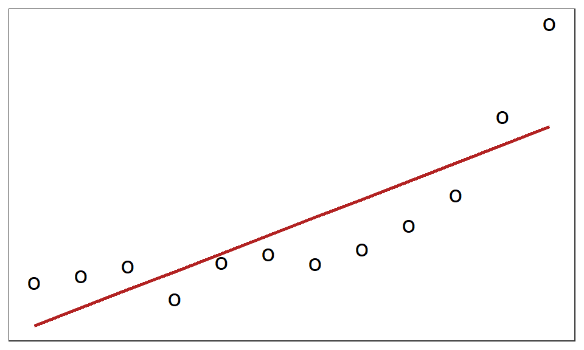
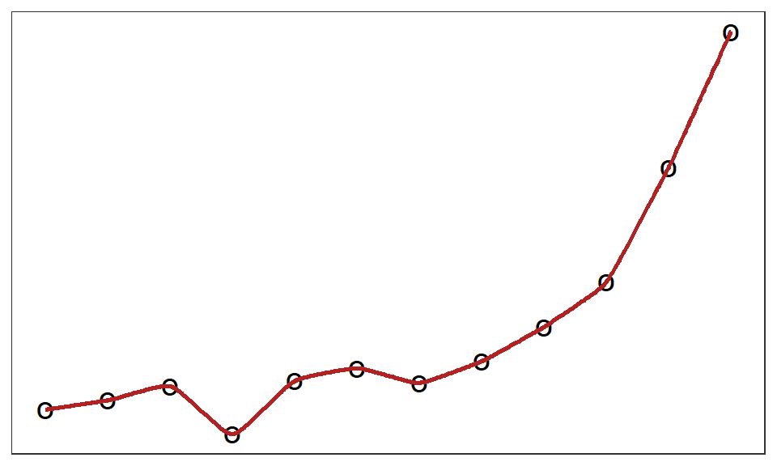
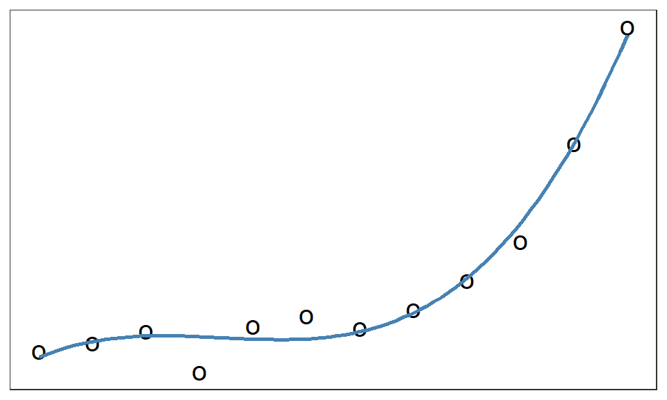

25 Introduktion
I dagens samhälle genereras över 400 miljoner terabyte data dagligen (https://www.statista.com/statistics/871513/worldwide-data-created/) av många olika former; text, ljud, video, bild. Klassiska statistiska modeller stöter ofta på problem dels när data inte är numeriska värden eller enkel text samt har stora problem att anpassas när data är alldeles för stort. Sedan 1990-talet har termer såsom Big Data, Knowledge Discovery, Data Mining, Artificial Intelligence, Machine Learning m.fl. alla försökt integrera statistisk teori med datavetenskapliga algoritmer för att hantera de specifika problem som uppkommer med stora datamängder av olika slag.
I denna del kommer vi introducera och tillämpa begreppet statistisk inlärning som ett samlingsnamn för metoder som låter en dator lära sig mönster, samband och trender för att lösa uppgifter med både beskrivande och prediktiva syften. Vi kommer göra avtramp i klassiskt statistiska modeller såsom linjär regression och statistisk inferens, identifiera när dessa metoder brister och vägleda (ORDVAL) valet av mer kraftfulla metoder.
25.1 Statistisk modellering
Vi kan kort sammanfatta statistisk modellering av samband med följande steg:
- Utifrån en frågeställning, samla in relevant data (variabler)
- Utforska data och välj en lämplig modell som beskriver det undersökta sambandet
- Anpassa modellen och undersök dess fel för att bedöma modellens lämplighet och relevans
- Använd modellen för inferens (slutsatser om populationen) och prediktioner (användning på ny data)
Dessa steg kan tillämpas inom linjär regression som följer:
TipsLinjär regression
Vi är intresserade av att undersöka sambandet mellan en responsvariabel \(\mathbf{Y}\) och ett antal förklarande variabler \(\mathbf{X}\) där vi antar ett linjärt samband mellan \(\mathbf{X}\) och \(\mathbf{Y}\).
En lämplig modell för att undersöka detta samband blir då:
\[ \begin{aligned} \mathbf{Y} = \mathbf{X} \boldsymbol{\beta} + \boldsymbol{\varepsilon} \end{aligned} \] där:
\[ \mathbf{Y} = \underset{n \times 1}{\Ymatrix} \quad \mathbf{X} = \underset{n \times p}{\Xmatrix} \quad \boldsymbol{\beta} = \underset{p \times 1}{\betamatrix} \quad \boldsymbol{\varepsilon} = \underset{n \times 1} {\epsilonMatrix} \] och \(\varepsilon \sim N(0, \sigma^2_e)\). \(n\) beskriver antalet observationer, \(k\) antalet variabler, och \(p\) antalet parametrar (\(k + 1\)).
Vi anpassar modellens parametrar med hjälp av minsta kvadratskattningen:
\[ \begin{aligned} \olsMatrix \end{aligned} \] där kovariansmatrisen för \(\boldsymbol{\hat{\beta}}\) beräknas enligt: \[ \begin{aligned} \olsVarMatrix \end{aligned} \] och \(SSE = \sseMatrix\).
Modellens residualer (\(\mathbf{Y} - \mathbf{X}\boldsymbol{\hat{\beta}}\)) beräknas och undersöks gentemot residualantaganden för att bedöma modellens lämplighet.
Med hjälp av skattningarna \(\boldsymbol{\hat{\beta}}\) och \(s^2_{\boldsymbol{\hat{\beta}}}\) kan vi genomföra inferens på modellens parametrar, både hypotesprövningar och konfidensintervall, för att dra slutsatser om de olika förklarande variablernas effekt på responsvariabeln. Vi kan också använda modellen för att prediktera \(\hat{Y}\) givet nya värden \(\mathbf{X}_0\) med tillhörande intervallskattningar.
Notera
Om du behöver en mer djupgående repetition av linjär regression (eller matrisberäkningar) rekommenderas att du läser igenom Kapitel 4.
I detta exempel kommer vi stöta på stora problem vid flera tillfällen, t.ex. om \(n\) är stort eller \(p > n\). Dessa data skulle kunna vara transaktionsdatabaser, hälsoregister, sociala nätverk, väder- och klimatdata, börsdata, textkorpus, sensordata m.fl.
TODO: ADD MORE ABOUT THE LIMITATIONS
25.2 Statistisk inlärning
Inom statistisk inlärning använder vi fortfarande samma grundsteg i en undersökning av samband. Det som skiljer är valet av den lämpliga modellen där vi med maskininlärningsmetoder kan utöka vår verktygslåda med specifika metoder som kan hantera bristerna i klassiska statistiska metoder.
Vi kan formalisera analysprocessen som följer:
- Formulering av problemet
- Insamling av data
- Databearbetning och hantering
- Bearbetning av variabler och/eller observationer
- Saknade värden, extremvärden, skalning/normalisering
- Explorativ analys med hjälp av beskrivande mått och visualiseringar
- Val av modell, dess anpassning och användning till prediktioner
- Utvärdering av modellen
I resterande kapitel kommer fokus ligga på steg fyra och fem genom att introducera flertalet metoder och hur dessa utvärderas på bästa sätt. De första tre punkterna lämnar vi till “tidigare kunskaper” eller andra delar. (ORDVAL)
Linjär regression är ett exempel på supervised learning (ungefärlig sv. övervakad inlärning) där vi vet sanna värden på responsvariabeln och “övervakar” inlärningen till den grad att modellen lär sig de observerade sanna värdena. Generellt kan vi dela upp supervised learning i två fält; regression och klassificering.
Notera
Det finns flera andra metoder för inlärning som inte tas upp i detta material. Dessa löser både olika syften och olika situationer som kan uppstå med insamlad data:
- Unsupervised learning där det inte finns någon responsvariabel och metoderna syftar till att hitta gömda grupperingar bland en mängd variabler.
- Semi-supervised learning där endast delar av responsvariabeln har observerade sanna värden
- Reinforcement learning där målet är att agera optimalt i en viss miljö och lär sig beteenden med hjälp av data
Regression förutsätter att vi har en kontinuerlig responsvariabel medan klassificering förutsätter en kategorisk responsvariabel. Hädanefter i detta material kommer vi släppa på termen “linjär” när vi pratar om regression då vi inte längre begränsar oss till just den typen av regressionsmodeller. Klassificering har inom ren statistik historiskt modellerats med hjälp av logistisk regression där vi fortfarande använder grunderna från den linjära modellen på grund av dess enkelhet men behöver transformera den med en länkfunktion och skatta modellens parametrar med hjälp av numerisk optimering. En detaljerad genomgång av logistisk regression finns i Kapitel 14.
25.2.1 Val av modell
Valet av en lämplig modell innefattar inte bara valet av modellfamilj (metod) ORDVAL utan även identifiering av modellens struktur och relevanta relationer. Det vi vill uppnå med en modellanpassning är att:
- modellen fångar upp sambanden mellan responsvariabeln och de förklarande kopplat till frågeställningen.
- modellen ska vara så enkel som möjligt för att underlätta både anpassning och användning.
- modellen ska gå att beräkna inom “rimlig tid”.
- Vi vill inte att modellen tar längre tid att anpassa än tidshorisonten den ska användas till, till exempel att det tar en dag att anpassa modell för att prediktera nästkommande dagsförsäljning i det extrema fallet.
- modellen ska generalisera till ny liknande data.
Vi kan formulera en standardmodell som följer:
\[ \begin{aligned} y = f(x|\theta) + \varepsilon \end{aligned} \tag{25.1}\] där \(f\) är en okänd funktion, \(\theta\) är funktionens parametrar, \(\varepsilon\) är en slumpmässig felterm med \(E[\varepsilon] = 0\) och \(Var(\varepsilon) = \sigma^2_e\).
Med hjälp av Ekvation 25.1 kan vi formulera både mer strukturerade och mer godtyckliga modeller såsom:
- \(f(x|\theta) = \theta_0 + \theta_1 x_1 + \theta_2 x_2\)
- \(f(x|\theta) = \theta_3 \cdot sin(2\pi\theta_1 x + \theta_2) + \theta_4\)
- \(f(x|\theta) = exp\left(-\theta_1 (x - \theta_2)^2\right)\)
Notera
Vanligtvis hittar vi inte på modeller helt godtyckligt då anpassningen, och användningen, av dessa riskerar bli alldeles för komplexa. Istället väljer vi någon av modellerna som har enkla sätt att anpassa dess parametrar givet vissa uppfyllda antaganden.
Modellens generaliserbarhet är väldigt viktig då vi vill motverka att en modell överanpassas till det observerade data. Samtidigt vill vi inte heller underanpassa en för enkel modell då den också kommer få problem att generalisera till ny data.

En underanpassad modell lyckas inte fånga up de relevanta strukturerna i data, exempelvis lyckas inte en enkel linjär modell fånga upp den krökta sambandet mellan x och y i Figur 25.1. En överanpassad modell antar att bruset är en del av sambandet, exempelvis i Figur 25.2 där alla observerade punkter nås exakt av den anpassade modellen.
Istället vill vi anpassa en generell modell som är lagomt komplex, som fångar upp strukturen men luras inte av bruset.

Figur 25.3 fångar upp de generella mönstrena men avviker inte när observationer avviker mycket från den. ORDVAL
Denna form av visualisering är omöjlig att göra i praktiken när vi ska välja en lämplig modell då vi har betydligt fler än två dimensioner i data. Istället använder vi oss av två andra knep; felfunktioner (även kallad kostnadsfunktioner) och datauppdelning.
25.2.2 Felfunktioner
En felfunktion är en funktion som, givet data, ger oss ett värde på hur bra modellen anpassar data. Inom linjär regression använder vi oss exempelvis av Mean Squared Error (MSE) som ett sätt att visa hur mycket fel en modell gör. Detta mått kommer vi åter att använda inom regression men också ge några alternativ som lämpar sig för olika ändamål.
MSE som mått kan beräknas som:
\[ \begin{aligned} MSE = \frac{1}{n} \Sum{n} \left(y_i - f(x_i | \hat{\theta})\right)^2 \end{aligned} \tag{25.2}\]
MSE kommer skapa stora värden om extremvärden förekommer i data. Då kan en alternativ felfunktion definieras som Mean Absolute Error (MAE):
\[ \begin{aligned} MAE = \frac{1}{n} \Sum{n} \left|y_i - f(x_i | \hat{\theta})\right| \end{aligned} \tag{25.3}\]
För klassificering är två vanliga mått Cross Entropy och Missclassification vilka vi kommer återkomma till senare.
Vi vet att när måtten är 0 så betyder det att inga fel alls är gjorda och att vi har en överanpassad modell eftersom den perfekt modellerar alla punkter i data, men vilket värde som innebär att vi underanpassar eller har hittat en lagom komplex modell är svårt att tyda med enbart felfunktioner.
25.2.3 Datauppdelning
Om vi delar upp data i minst två slumpmässiga delar, anpassar modellen på en del, beräknar felfunktionen för den första och en annan del, för att till sist jämföra dessa mått kan vi nu se när en modell är lagomt komplex.
Data kan delas in i tre olika delar med olika syften:
- Träningsmängd: används för att “träna”, dvs. anpassa, modellen
- Valideringsmängd: används för att “validera”, dvs. välja den bästa modellen
- Testmängd: används för att få en väntevärdesriktig skattning av felet för en modell
Detta är en disjunkt uppdelning för att träningen och valideringen av modellen inte genomförs på samma data.
Notera
Notera att olika litteratur kan ibland blanda ihop termerna validering och test. De säger att de använder en testmängd när de i själva verket använder det som valideringsmängden, det vill säga för att välja den bästa modellen.
För att modellen ska få så mycket information som möjligt för sin träning1, bör vi använda det mesta av det insamlade datamaterialet till träningsmängden. Vi vill dock också få en bra mängd data till valideringen, och till sist testningen, så vi får försöka balansera proportionerna i denna uppdelning på något sätt. Vanliga proportioner är:
- 1/3, 1/3, 1/3
- 1/2, 1/4, 1/4
- 0.8, 0.1, 0.1
Det viktigaste är att träningsmängden inte är den minsta av de tre.
I R finns det flera olika sätt att genomföra denna uppdelning, men den absolut enklaste är genom att använda indexering.
# Anger antalet observationer i data
n <- nrow(mtcars)
# Anger storleken av träningsmängden
trainSize <- 0.8
# Drar slumpmässigt n*trainSize observationsindex
trainIndex <- sample(seq_len(n), size = n*trainSize)
# Plockar ut valda index till trainData
trainData <- mtcars[trainIndex,]
# Tar bort valda index till validData
validData <- mtcars[-trainIndex,]trainData består nu utav 25 slumpmässigt utvalda observationer och validData består utav de resterande observationerna. Vill vi utöka till tre mängder kan vi genomföra ytterligare en indexering av validData till en kvarvarande valideringsmängd och en efterföljande testmängd.
Tips
En grundläggande genomgång i R visas i Kapitel 1. Känner du att du saknar vissa av dessa kunskaper, titta tillbaka på tidigare material innan du går vidare.
25.3 Exempeldata
Genomgående i denna del kommer vi exemplifiera teorin med hjälp av olika datamaterial. Dessa datamaterial är enklare exempel på data som kan dyka upp i verkligheten men det är värt att komma ihåg att en stor del av en riktig analys kräver bearbetning av data till de format som våra modeller önskar.
Spammail

Datamaterialet spambase kan hämtas här.
Materialet består av 4601 mail där den (relativa) frekvensen av vissa utvalda ord (Word1-Word48), förekomsten av olika speciella symboler (Char1-Char6), samt tre variabler som beskriver medellängden av intilliggande stora bokstäver, den längsta längden av intilliggande stora bokstäver och det totala antalet stora bokstäver (Capitalrun1-Capitalrun3). Responsvariabeln (spam) för detta data är en binär variabel där värdet 1 indikerar att mailet var ett spam samt värdet 0 indikerar att mailet inte var ett spam.
Detta datamaterial beskriver ett vanligt klassificeringsproblem, vi vill undvika att få onödiga mail i vår inkorg. Verkliga spamfilter är mer komplexa än denna men datamaterialet ger en bra indikation på hur vi kan använda kvantitativa data från text för att bedöma mailets relevans.
Klimatdata

Datamaterialet lakesurvey kan hämtas här.
Datamaterialet innehåller kemisk information från 2782 svenska sjöar uppmätta under 2005 inklusive dess longitud och latitud. Mätningarna beskriver olika egenskaper av sjön, dess temperatur, pH och halter av olika ämnen.
LÄgg till karta med alla sjöar
Detta material kommer användas för regression.
Vi har en sjö, Lerkilen, som har extrema värden på många av de kemiska mätningarna vilket gör att vi plockar bort den sjön.
25.3.0.1 Vindata

Datamaterialet wine kan hämtas här tagen från Aeberhard och Forina (1992). Datamaterialet innehåller 13 kemiska egenskaper om tre olika vintyper (class).
Detta datamaterial kommer användas för multinomial klassificering.
Referenser
Aeberhard, Stefan, och M. Forina. 1992. ”Wine”. UCI Machine Learning Repository.
Hädanefter kommer vi använda tränas/träning för att mena anpassning av modeller.↩︎
freezelight, CC BY-SA 2.0, via Wikimedia Commons↩︎
Irrre, CC BY-SA 4.0, via Wikimedia Commons↩︎
Franz van Duns, CC BY-SA 4.0, via Wikimedia Commons↩︎
{kind=link}
{kind=link}
.jpg){kind=link}